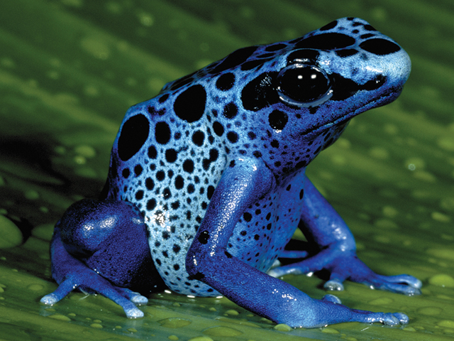

Poison dart frogs are one of the planet’s most brightly colored animals. Depending on the species, they can be yellow, copper, gold, red, blue, green, black or a combination of those colors. Their showy colors and startling designs help warn predators of the danger they impose -- a defense mechanism known as “aposematic coloration.” Within their skin, they store natural venom that can paralyze, or even kill, a predator.
